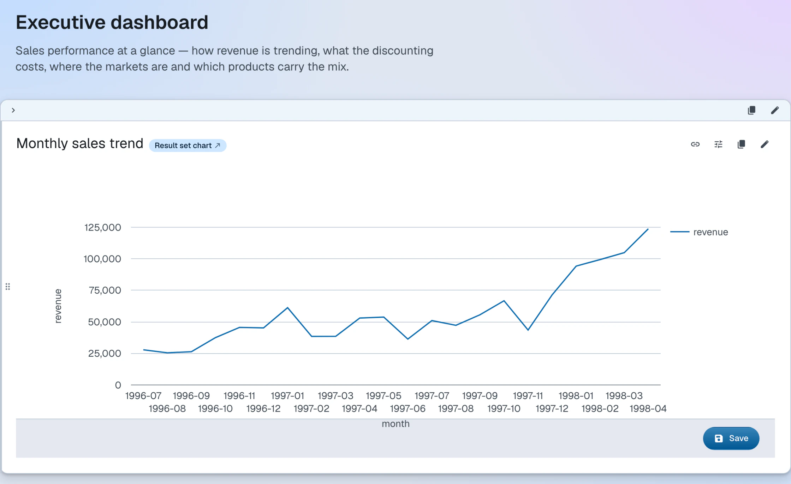

Content blocks
Content blocks and the actions for managing them
The content list is a layout mode that allows composition of rich, structured web documents from multiple types of content blocks.
The blocks are attached to the document resource using RDF sequence properties rdf:_1, rdf:_2 etc.
The index number in the property URI indicates the position of the content block on
the document's content list. The Northwind dashboard's root document, for example,
starts with:
<https://localhost:4443/>
rdf:_1 <https://localhost:4443/#overview-intro> ; # an XHTML block
rdf:_2 <https://localhost:4443/#sales-trend-block> . # an object block wrapping a chart
Source: root.ttl · Live: the dashboard
Blocks come in two types: XHTML (ldh:XHTML) and object (ldh:Object). These are the only types allowed as content block values — anything that is not
XHTML markup, such as a query, a chart or an external resource, has to be wrapped
into an ldh:Object. A built-in constraint rejects other values.
Blocks can be rearranged by dragging a block's handle to a new position. Every block also offers a button that copies the block's URI to the clipboard.

XHTML blocks
An XHTML block is a fragment of XHTML, stored as a canonical XML literal (rdf:XMLLiteral) in the RDF document. It is edited in place using the rich-text editor, which also
supports RDFa annotations.
RDF serialization
@prefix ldh: <https://w3id.org/atomgraph/linkeddatahub#> .
@prefix rdf: <http://www.w3.org/1999/02/22-rdf-syntax-ns#> .
<https://localhost:4443/#overview-intro>
a ldh:XHTML ;
rdf:value "<div xmlns=\"http://www.w3.org/1999/xhtml\">\n<p>The iconic sample database, reborn as an RDF Knowledge Graph.</p>\n</div>"^^rdf:XMLLiteral .
Object blocks
Blocks other than XHTML content are called objects and must have a dereferenceable URI. Objects are embedded (transcluded) into the HTML page. You can use any RDF resource or uploaded file as an object.
LinkedDataHub will first attempt to load RDF data from the object URI and render it
as a block. If that fails, it will simply embed it using the HTML <object> element. Object blocks can be used to embed queries, charts, and other LinkedDataHub
system resources.
Built-in block types render as cards: a header carries the block's title and actions such as the links popover and the copy-URI button, and the block's content follows below. Block-type-specific controls join the header area — a view block, for example, adds its facet toolbar and parallax row there. The layout of the content may depend on the active mode of the block.
RDF serialization
@prefix ldh: <https://w3id.org/atomgraph/linkeddatahub#> .
@prefix rdf: <http://www.w3.org/1999/02/22-rdf-syntax-ns#> .
@prefix dct: <http://purl.org/dc/terms/> .
<https://localhost:4443/#top-manager>
a ldh:Object ;
dct:title "Vice President, Sales" ;
rdf:value <https://localhost:4443/employees/2/#this> .
This block from the Northwind dashboard embeds a plain data resource — the Vice President
of Sales, rendered with his description and photo.
The object can equally be a query, a chart, a
view, or an external Linked Data URI, and an optional ac:mode on the block picks the
layout mode it renders in.
Source: root.ttl · Live: the dashboard
Management
Content blocks can only be managed when the Content layout mode is active. The edit and delete buttons only appear for agents with write access.
| Action | Description |
|---|---|
| Create XHTML block | Click the XHTML button at the bottom of the page. Create the XHTML content in the rich-text editor. |
| Create object block | Click the Object button at the bottom of the page. Enter the object's value URI. Click Save. |
| Update XHTML block | Click into the block's content and edit it in place. The changes are saved automatically when the focus leaves the block — there is no separate save button. |
| Update object block | Click the button in the top-right corner of the block (it will only appear when you move the mouse close to that corner). Change the object's value URI. Click Save. |
| Delete | Click the button in the top-right corner of the block (it will only appear when you move the mouse close to that corner). Confirm in the dialog that appears. |
| Reorder | Drag the block by its drag handle and drop it in a different position on the content list. |
| Copy URI | Click the copy button on the block to copy the block's URI to the clipboard. |
| Action | CLI command |
|---|---|
| Create XHTML block | ldh add xhtml-block |
| Create object block | ldh add object-block |
| Delete | ldh remove block |
Updating and reordering blocks has no dedicated command; use ldh patch with a SPARQL update on the document.
To compose content blocks step-by-step, follow the Create content guide